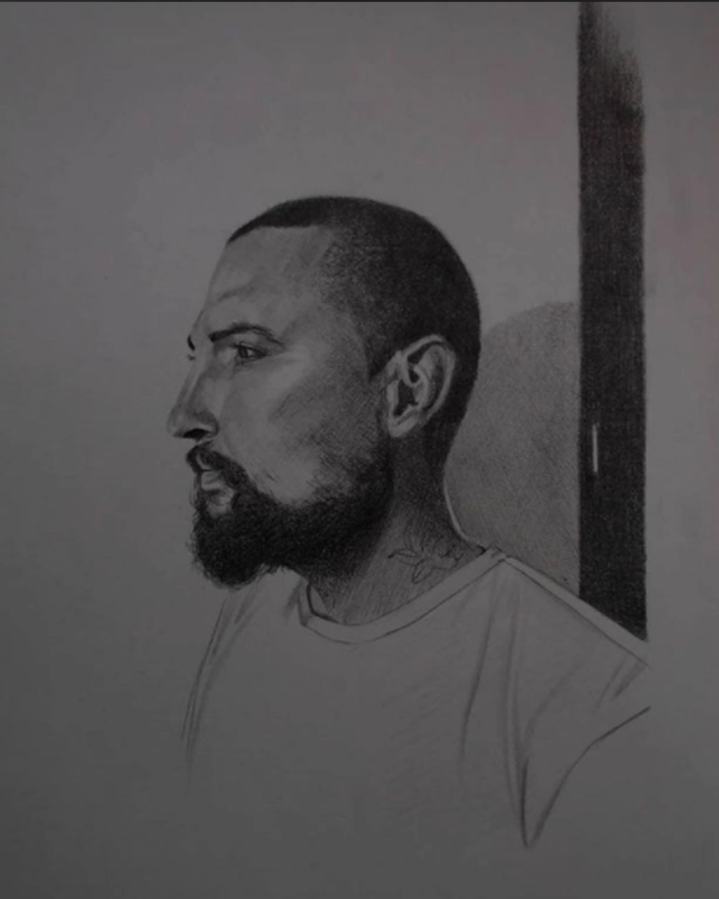

Acerca de mí
Mi trabajo como Artista Visual se centra en el diálogo entre los medios tradicionales y las herramientas digitales.
Las prácticas del dibujo, la ilustración, el tatuaje y el diseño gráfico se han relacionado en mi proceso creativo para encontrar mis propias formas de expresión visual.
Exposición
El dibujo como práctica de memoria
2023 — Casa de la Cultura de Soacha
Serie de ocho retratos de mi padre, resultado de mi proyecto de grado sobre el dibujo como herramienta para registrar y transmitir la memoria personal y familiar.
A través del grafito y el dibujo digital, cada pieza explora un gesto distinto de su cotidianidad, buscando capturar no solo su imagen, sino también su historia.